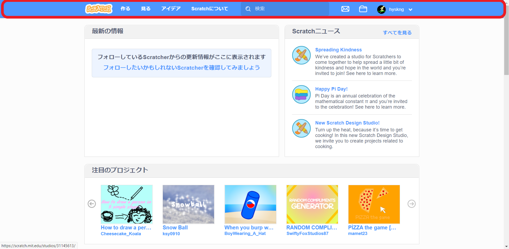
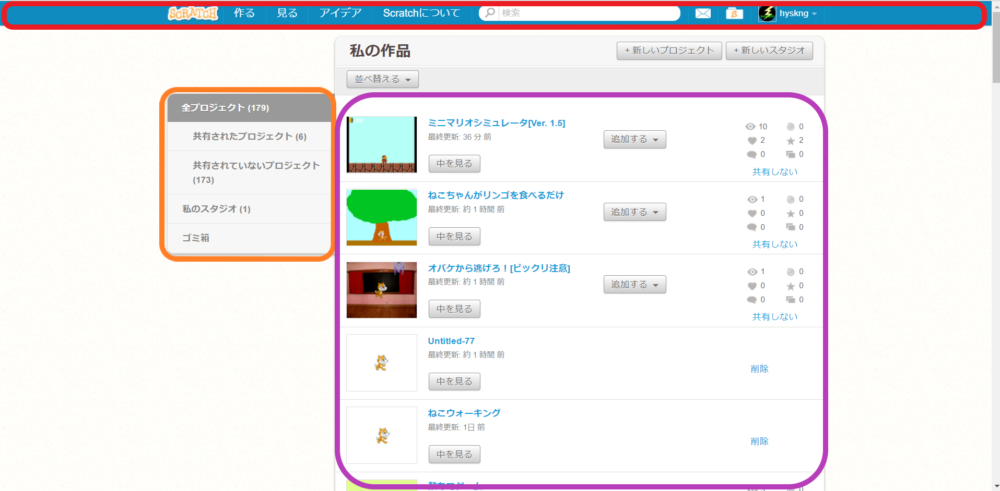
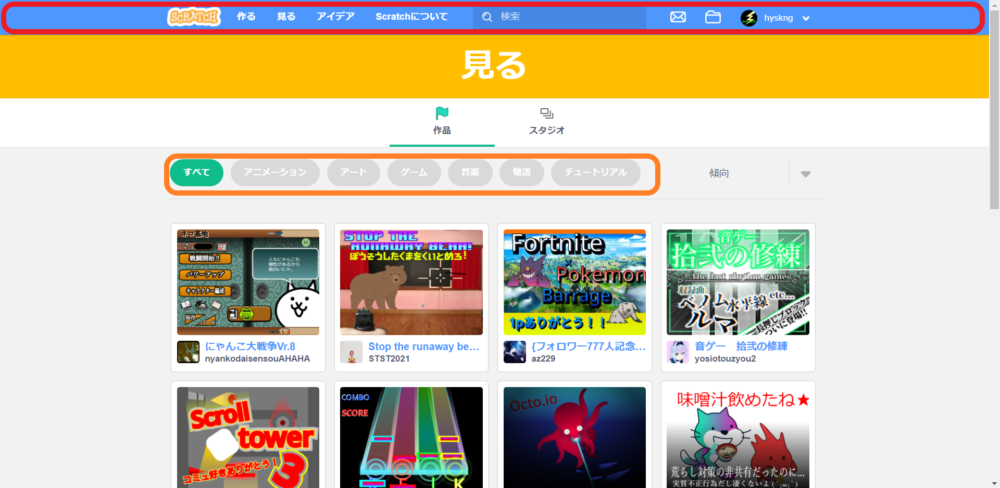
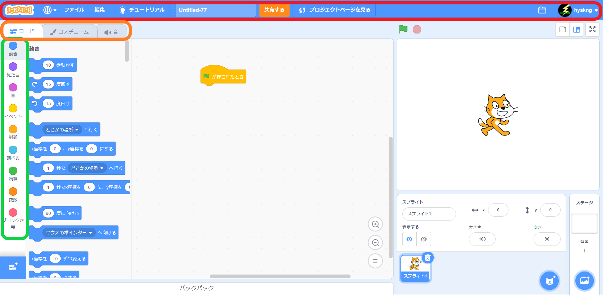
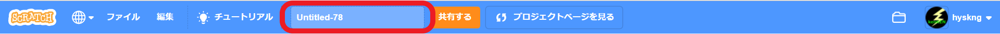
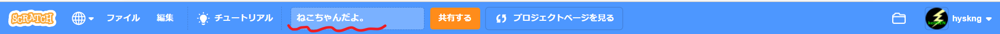
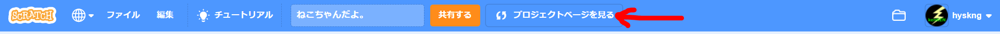
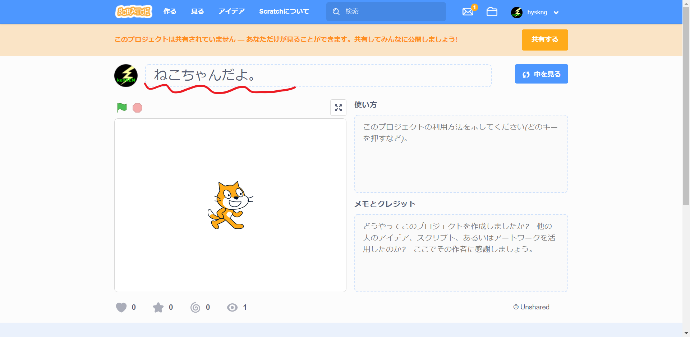
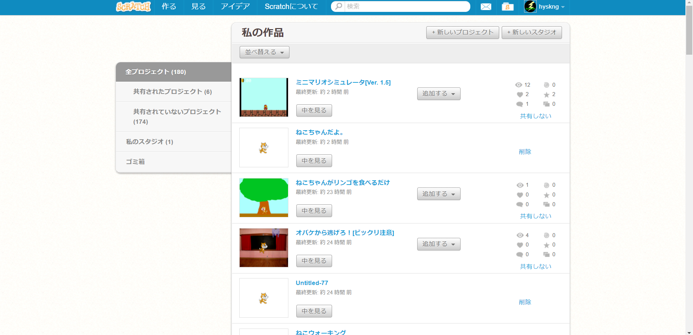
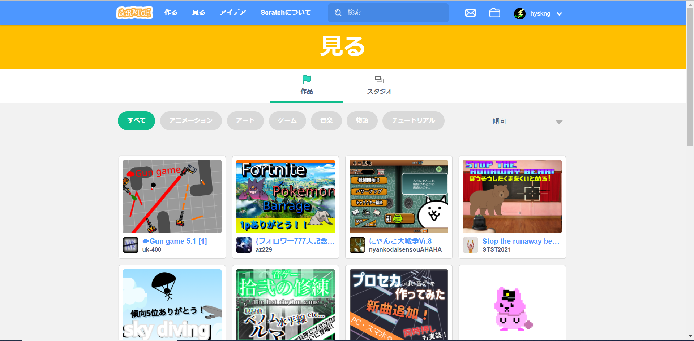

Scracthの基本
ようこそ！ 番外編、楽しんでくれましたかね？
今回は、プログラミングには触れず、Scratchの基本などを学びましょう！
もし知っていても、備忘録と思っておいてくださいね。
プログラミングにおいて、使うエディタの操作の確認は大事だと思います。
３時間くらいプログラミングして、オートセーブだと思って閉じたら
最初から... なんて経験もありました。懐かしいものです。
では早速、Scratchについて見ていきましょう！。
っと、その前に、このサイトで使う言葉を確認しておきます。
(最初のページで解説したものはそのままの名称です。)




赤 : メニューバー
オレンジ : タブ(例:コスチュームタブ などと呼びます)
紫 : リスト
緑 : パレット(例:動きパレット 等と呼びます)
①Scracthの基本操作
まずは、Scratchのホームを開いてください。
ここで、メニューバーの[作る]を押してください。
新しいプロジェクトが作成されますね。
そうしたら、メニューバーの[チュートリアル]の隣に
「Untitled-数字」 という文字が見つかると思います。

これを変更すると、プロジェクトの名前が変わります。
練習のため、名前を変更してみてください。

そのあと、メニューバーの[プロジェクトページを見る]というボタンを
クリックしてください。

これで、プロジェクト名がさっき入力したものになっているはずです。

また、このページはプロジェクトページと言って、
プロジェクトの内部ではなく、
共有したときにプロジェクト画面で表示される内容を変更できます。
こんな感じです。
次に、メニューバーの[私の作品](ファイルマーク)を押してください。
すると、下のような画面になるはずです。
(たくさんプロジェクトがあるのは僕がたくさん作ったからです)

細かいことは後ほど実践しつつ解説していきますが、
ここで 作ったプロジェクトの一覧を見ることができます。
プロジェクトの削除等もできます。
②Scracthで他人の作品を見る
プログラミングは、他の人のプログラムを見て
色々なことを学ぶことがとても大切です。
「この人はこんな感じで作るんだな」と分析する力をつけ、
それを自分の作品に生かす。 これを繰り返します。
他人のプログラムを分析できるようになってくると、
「あぁ、こんな作り方もいいな」など、他人のアイディアを
自分の作品作りに生かすことができ、
とても楽しいですよ！
Scratchで他人の作品を見て回る方法について解説します。
メニューバーの[見る]を押してください。
下のような画面になると思います。

ここで、他の人が共有した色々な作品が見れます。
すべて,アニメーション,ゲーム など、ジャンルを絞ったりもできます。
以上です。
覚えておいてほしいことはとりあえずこんな感じです。
覚えておいてください！忘れないでくださいね！
次回は、Scratchでゲームを作るときの
基本操作について解説します。
今回もお疲れ様でした。
それでは、次のページで会いましょう！
Scracth編2:ゲーム作りの基本操作